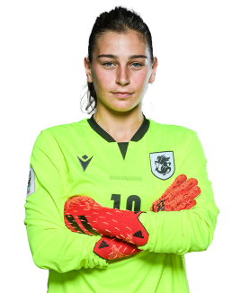
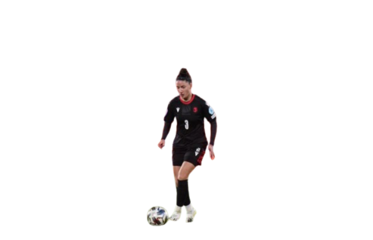

თათია გაბუნია
საკლუბო კარიერა
გაბუნია სამი წლის განმავლობაში თამაშობდა ლანჩხუთის საფეხბურთო კლუბში.[1] 2022 წლის დეკემბრის ბოლოს გადავიდა თურქეთში და კონტრაქტი გააფორმა დიარბაქირულ კლუბ „Amed S.F.K.“. თურქეთში, მხოლოდ 2022-23 წლების სუპერლიგის მეორე ნახევარი გაატარა.[2][3] „Amed S.F.K.“-ში მხოლოდ ერთი მატჩის ჩატარების შემდეგ, ის 2023 წლის 3 მარტს საქართველოში დაბრუნდა. ამჟამად თამაშობს საფეხბურთო კლუბ „კვარტალში“.
საერთაშორისო კარიერა
გაბუნიას უთამაშია როგორც ასაკობრივ, ასევე ძირითად საქართველოს ნაკრებში. მან ნაკრებთან ერთად უეფას ქალთა ევრო 2021-ის საკვალიფიკაციო ეტაპზე ითამაშა. ის ასევე გამოიძახეს ეროვნულ ნაკრებში 2023-2024 წლების სეზონში, რომელშიც ყველა მატჩში სასტარტო მეკარე იყო. 2023 წლის 1 დეკემბერს, იგი მონაწილეობდა მატჩში, რომელშიც საქართველოს ქალთა ნაკრებმა პირველი ოფიციალური სატურნირო გამარჯვება მოიპოვა, დაამარცხა რა ლუქსემბურგის ქალთა ნაკრებ
ი ანგარიშით 4:2.

ნინო პასიკაშვილი
სათამაშო კარიერა
კლუბი
2012-13 წლების სეზონში ნინო პასიკაშვილი FC მინსკში გადავიდა ბელორუსიის ქალთა პირველ ლიგაში. 2013–14 წლების სეზონში ნინო პასიკაშვილი გადავიდა FC ხარკოვში უკრაინის ქალთა პირველ ლიგაში, 2014–16 სეზონში ნინო პასიკაშვილი გადავიდა Adana İdmanyurduspor-ში თურქეთის ქალთა პირველ საფეხბურთო ლიგაში [1].
2016 წლის 5 თებერვალს მან კონტრაქტი გააფორმა სტამბოლის კლუბ ატაშეჰირ ბელედიესპორთან.[1]
მრავალი წლის განმავლობაში თავისი ქვეყნის გარეთ თამაშის შემდეგ, იგი დაბრუნდა და განაგრძო თამაში WFC Nike-ში 2018-2019 წლების სეზონებში. 2020 წელს გადავიდა საქართველოს ჩემპიონატის ახლადშექმნილ კლუბ კვართალში. პასიკაშვილი გუნდის კაპიტანი გახდა და 1-ნახევარ სეზონში გუნდში 25-ზე მეტი მატჩი ჩაატარა. 2021 წელს კვარტალში ნახევარი სეზონის შემდეგ პასიკაშვილი სოხუმის დინამოში გადავიდა. კლუბში წელიწადნახევრის შემდეგ პასიკაშვილმა გადაწყვიტა ისევ გადასულიყო და დაბრუნებულიყო ყვარტალში, სადაც ამჟამად თამაშობს. ნინო პასიკაშვილი გუნდის კაპიტანია, რომელმაც კლუბში 30-ზე მეტი მატჩი 2 წელზე ნაკლებ დროში მიიღო. პასიკაშვილი და მისი გუნდი საქართველოს ჩემპიონატის ამჟამინდელი ლიდერები არიან.
საერთაშორისო
პასიკაშვილი საქართველოს 17 და 19 წლამდე ქალთა ეროვნულ ნაკრებში თამაშობდა, სანამ საქართველოს ნაკრებში გამოჩნდებოდა. მან მონაწილეობა მიიღო 2015 წლის FIFA-ს ქალთა მსოფლიო ჩემპიონატის საკვალიფიკაციო (UEFA) - B ჯგუფის მატჩებში და გაიტანა ერთი გოლი თავისი ქვეყნისთვის.[4] ნინო პასიკაშვილი ამჟამად სასტარტო 11-ში თამაშობს საქართველოს ქალთა საფეხბურთო ნაკრებში. მრავალი წაგების შემდეგაც კი, ეროვნულმა გუნდმა მაინც დაწერა ისტორია, მოიგო მატჩი ლუქსემბურგთან 7 წლიანი ოფიციალური მოგების შემდეგ. პასიკაშვილი ასევე მონაწილეობდა ლიტვასთან გასაოცარ გამარჯვებაში 2024 წლის ივლისში, სადაც ქვეყანა პირველად გავიდა უეფას ქალთა ევროს საკვალიფიკაციო პლეი-ოფში.
